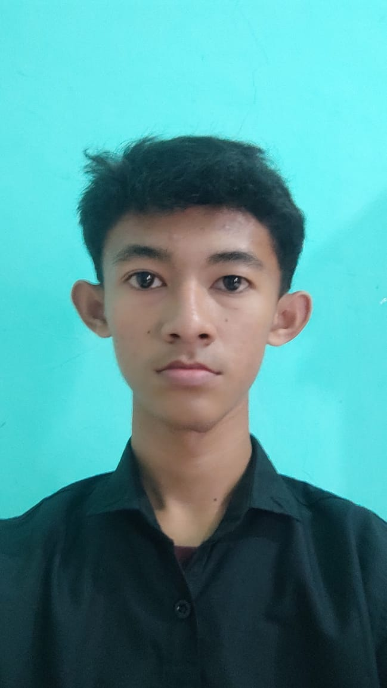

<!DOCTYPE html>
<html lang="en">
<head>
  <meta charset="UTF-8">
  <meta name="viewport" content="width=device-width, initial-scale=1.0">
  <title>cv</title>
  <link rel="stylesheet" href="11.css">
</head>
<body>
</html>
  <body>
    <!-- Profile Header Section -->
    <div class="profile-header">
      
      <h1>syandhila karno</h1>
      <p>Mahasiswa UBP Karawang</p>
    </div>

    <!-- Main Profile Section -->
    <div class="profile-container">
      <!-- About Me Section -->
      <section class="about-me">
        <h2 class="profile-section-title">About Me</h2>
        <p>
            As a lecturer and Fullstack Web Developer, I combine my enthusiasm for
            shaping the younger generation with my interest in the IT world. I
            don't just teach academic concepts; I also integrate Fullstack Web
            Development skills into education, bridging the gap between theory and
            real-world practice.
          </p>
        </section>
        <!-- Experience Section -->
        <section class="experience">
          <h2 class="profile-section-title">Experience</h2>
  
          <!-- Experience -->
          <div class="experience">
            <h3>experience</h3>
            <p class="role">PKL di Balai Desa</p>
            <p class="company">Ciasem</p>
            <p class="duration">juni 2022 - september 2022</p>
          </div>
        </section>
        <!-- Experience Section -->
        <section class="pendidikan terakhir">
          <h2 class="profile-section-title">pendidikan terakhir</h2>
        </p>
        SMK
        </p>
 </body>
</html>  